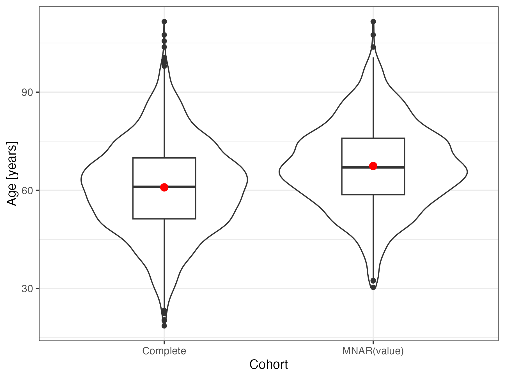

NARFCS sensitivity analysis
Janick Weberpals
narfcs_sensitivity_analysis.Rmd
# basic setup
library(smdi)
library(ggplot2)
library(survival)
library(gt)
suppressPackageStartupMessages(library(mice))
suppressPackageStartupMessages(library(dplyr))Sensitivity analysis for MNAR(value)
As we have seen earlier, if the missingness mechanism of an important covariate, such as a strong partially observed confounder, truly follows either a missing completely at random (MCAR) or a missing not at random value (MNAR[value]) scenario, the distinction between the two can turn out very difficult. This can have serious consequences since covariates that follow a true MNAR(value) mechanism may severely bias the effect estimation of an exposure of interest.
In reality, we will not be able to know 100% what the true missingness mechanism is and there may always be some residual uncertainty in case of MNAR(value). On the positive side, however, Leacy and Moreno-Betancur et al.1 have proposed a useful procedure to impute multivariable missing data under MNAR(value) conditions. By definition, under a MNAR(value) mechanism, the true (but unobserved) values of a variable systematically differ from the observed values. The idea of the not at random fully conditional specification (NARFCS) sensitivity analysis is to specify an imputation model containing a sensitivity parameter ùõÖ that reflects this systematic departure from a missing at random (MAR) mechanism.
Illustrative example
For example, the age_num of patients below a certain age
cut-off may be systematically less frequently recorded. Despite this,
age_num may still be an important predictor for the
initiation of the treatment of interest and simultaneously an import
prognostic variable for the outcome (time to death due to any reason
[overall survival] in this example).
For simplicity, we don’t assume any other missing covariates for now.
In order to introduce an MNAR(value) mechanism for the
age_num covariate, we:
- Determine a missingess
pattern, in which only
age_numwill be set to missing - Create a weight
vector, in which only
age_numitself (by a non-zero value) is the linear predictor for the probability of observations becoming missing - Specify a type of logistic probabillity distribution for the
missingness weights, so that cases with low weighted sum scores
(i.e. younger
age_num) will have a larger probability of becoming incomplete - Define an overall missingness proportion of ~40%
# load complete dataset
smdi_data_complete <- smdi_data_complete %>%
fastDummies::dummy_columns(
select_columns = "ses_cat",
remove_most_frequent_dummy = TRUE,
remove_selected_columns = TRUE
)
# determine missingness pattern
age_col <- which(colnames(smdi_data_complete)=="age_num")
miss_pattern <- rep(1, ncol(smdi_data_complete))
miss_pattern_age <- replace(miss_pattern, age_col, 0)
# weights to compute missingness probability
# covariate itself is only predictor
miss_weights_mnar_v <- rep(0, ncol(smdi_data_complete))
miss_weights_mnar_v <- replace(miss_weights_mnar_v, age_col, 1)
miss_prop_age <- .55
set.seed(42)
smdi_data_mnar_v <- ampute(
data = smdi_data_complete,
prop = miss_prop_age,
mech = "MNAR",
patterns = miss_pattern_age,
weights = miss_weights_mnar_v,
bycases = TRUE,
type = "LEFT"
)$ampVisual comparison
If we plot the direct comparison of age_num
distributions between the original data and the data with complete cases
after removing those who have a missing value following an MNAR(value)
mechanism, we can observe the systematic difference in the two
datasets.
# plot
bind_rows(
smdi_data_complete %>% select(age_num) %>% mutate(dataset = "Complete"),
smdi_data_mnar_v %>% select(age_num) %>% mutate(dataset = "MNAR(value)")
) %>%
ggplot(aes(x = dataset, y = age_num)) +
geom_violin() +
geom_boxplot(width = 0.3) +
stat_summary(
fun = "mean",
geom = "pointrange",
color = "red"
) +
labs(
y = "Age [years]",
x = "Cohort"
) +
theme_bw()
smdi diagnostics
Now let’s use smdi_diagnose to investigate the three
group diagnostics from age_num. This may help characterize
the underlying missingness mechanism.
age_diagnostics <- smdi_diagnose(
data = smdi_data_mnar_v,
covar = "age_num",
model = "cox",
form_lhs = "Surv(eventtime, status)"
)
gt(age_diagnostics$smdi_tbl) %>%
tab_footnote(
footnote = "Group 1 diagnostic: Differences in patient characteristics between patients with and without covariate",
locations = cells_column_labels(
columns = c(asmd_median_min_max, hotteling_p)
)
) %>%
tab_footnote(
footnote = "Group 2 diagnostic: Ability to predict missingness",
locations = cells_column_labels(
columns = rf_auc
)
) %>%
tab_footnote(
footnote = "Group 3 diagnostic: Assessment if missingness is associated with the outcome (crude, adjusted)",
locations = cells_column_labels(
columns = c(estimate_crude, estimate_adjusted)
)
)| covariate | asmd_median_min_max1 | hotteling_p1 | rf_auc2 | estimate_crude3 | estimate_adjusted3 |
|---|---|---|---|---|---|
| age_num | 0.056 (0.004, 0.360) | <.001 | 0.543 | -0.41 (95% CI -0.50, -0.32) | -0.40 (95% CI -0.49, -0.32) |
| 1 Group 1 diagnostic: Differences in patient characteristics between patients with and without covariate | |||||
| 2 Group 2 diagnostic: Ability to predict missingness | |||||
| 3 Group 3 diagnostic: Assessment if missingness is associated with the outcome (crude, adjusted) | |||||
# little's
age_diagnostics$p_little
#> p_little: <.001We observe from this diagnostics that with a median absolute
standardized mean difference (asmd) of 0.056 there don’t seem to be
major differences between patients with and without an observed
age_num value, although Hotelling’s test picks up some
differences here which may be driven by the larger sample size, though.
Also group 2 and group 3 diagnostics tend to show characteristics that
one would expect in case of a missing completely at random missingness
mechanims or -as we have observed in simulations- an MNAR(value)
mechanism. That is, both MCAR and MNAR(value) are extremely
difficult to distinguish because the missingness in MNAR(value) solely
depends on age_num itself and no other observed or
unobserved factors which makes it really hard to see any differences
when comparing patient characteristics (group 1 diagnostics), trying to
predict missingness (group 2 diagnostics) or investigate if missingness
is associated with the outcome (group 3 diagnostics).
Comparing treatment effect estimates
We can now compare and estimate the bias caused by the 40% of MNAR(value) missing values.
First, we specify a general outcome model.
# outcome model (see data generation script)
cox_lhs <- "survival::Surv(eventtime, status)"
covariates <- smdi_data_complete %>%
select(-c(exposure, eventtime, status)) %>%
names()
cox_rhs <- paste(covariates, collapse = " + ")
cox_form <- as.formula(paste(cox_lhs, "~ exposure +", cox_rhs))
cox_form
#> survival::Surv(eventtime, status) ~ exposure + age_num + female_cat +
#> ecog_cat + smoking_cat + physical_cat + egfr_cat + alk_cat +
#> pdl1_num + histology_cat + copd_cat + ses_cat_1_low + ses_cat_2_middleNext, we compute the true Hazard Ratio (HR), the complete case HR and the standard mice multiple imputation HR.
# true outcome model
cox_fit_true <- survival::coxph(cox_form, data = smdi_data_complete) %>%
broom::tidy(exponentiate = TRUE, conf.int = TRUE) %>%
filter(term == "exposure") %>%
select(term, estimate, conf.low, conf.high, std.error) %>%
mutate(analysis = "True estimate")
# complete case analysis
cox_fit_cc <- survival::coxph(cox_form, data = smdi_data_mnar_v) %>%
broom::tidy(exponentiate = TRUE, conf.int = TRUE) %>%
filter(term == "exposure") %>%
select(term, estimate, conf.low, conf.high, std.error) %>%
mutate(analysis = "Complete case analysis")
# Multiple imputation (predictive mean matching)
cox_fit_imp <- mice(
data = smdi_data_mnar_v,
seed = 42,
print = FALSE
) %>%
with(
expr = survival::coxph(formula(paste(format(cox_form), collapse = "")))
) %>%
pool() %>%
summary(conf.int = TRUE, exponentiate = TRUE) %>%
filter(term == "exposure") %>%
select(term, estimate, conf.low = `2.5 %`, conf.high = `97.5 %`, std.error) %>%
mutate(analysis = "Multiple imputation")
forest <- bind_rows(cox_fit_true, cox_fit_cc, cox_fit_imp) %>%
mutate(analysis = factor(analysis, levels = c("True estimate", "Complete case analysis", "Multiple imputation"))) %>%
ggplot(aes(y = forcats::fct_rev(analysis))) +
geom_point(aes(x = estimate), shape = 15, size = 3) +
geom_errorbar(aes(xmin = conf.low, xmax = conf.high)) +
geom_vline(xintercept = cox_fit_true[["estimate"]], linetype = "dashed") +
labs(x = "Hazard ratio (95% CI)", y= "") +
theme_bw()
table <- bind_rows(cox_fit_true, cox_fit_cc, cox_fit_imp) %>%
select(-term) %>%
relocate(analysis, .before = estimate) %>%
mutate(across(tidyselect::where(is.numeric), ~round(.x, 2)))
gridExtra::grid.arrange(gridExtra::tableGrob(table, rows = NULL), forest)
The deviation of the complete case and multiple imputation estimates
aren’t too off which has to do with age_num being a rather
moderate confounder in this simulation. Nevertheless, in reality we
don’t know this for sure and a sensitivity analysis would probably make
sense to test the robustness of our primary analysis.
NARFCS imputation
As mentioned above, under MNAR(value) the true (but unobserved)
values of a variable systematically differ from the observed values and
this difference is reflected in the sensitivity parameter
ùõÖ. More specifically, the interpretation of
ùõÖ would be the difference in the distribution of
missing and observed age_num values conditional on other
covariates. Hence, for continuous covariates (like in our example) it
would be the difference in mean conditional on female_cat + ecog_cat +
smoking_cat + physical_cat + egfr_cat + alk_cat + pdl1_num +
histology_cat + copd_cat + ses_cat_1_low + ses_cat_2_middle.
If in reality, we would know this sensitivity parameter, we could easily plug it into our NARFCS.
Tipping point analysis
But unfortunately, in reality we usually don‚Äôt know the value of ùõÖ and relying on a single ùõÖ may be not too reassuring. Nevertheless, we want to make sure that whatever analytical decision we chose for our primary analysis (be it a complete case approach or an imputation approach), our results would not drastically change if the true underlying missingness mechanism was MNAR(value).
This is where the NARFCS sensitivity analysis comes in handy as its strengths as it is also often used as a tipping point analysis, i.e.¬†we model multiple NARFCS-specified imputation models over a range of realistic ùõÖ sensitivity parameters and evaluate if at any pre-specified ùõÖ, our confidence interval would cross a certain estimate threshold which would discard the global conclusion of our primary analysis.
# initialize method vector
method_vector <- rep("", ncol(smdi_data_mnar_v))
# columns for narfcs imputation with sensitivity parameter
mnar_imp_method <- which(colnames(smdi_data_mnar_v) == "age_num")
# update method vector
method_vector <- replace(x = method_vector, list = c(mnar_imp_method), values = c("mnar.norm"))
# modeled over a range of deltas
narfcs_modeled <- function(i){
# mnar model specification ('i' is delta parameter)
mnar_blot <- list(age_num = list(ums = paste(i)))
narfcs_imp <- mice(
data = smdi_data_mnar_v,
method = method_vector,
blots = mnar_blot,
seed = 42,
print = FALSE
) %>%
with(
expr = survival::coxph(formula(paste(format(cox_form), collapse = "")))
) %>%
pool() %>%
summary(conf.int = TRUE, exponentiate = TRUE) %>%
filter(term == "exposure") %>%
select(term, estimate, conf.low = `2.5 %`, conf.high = `97.5 %`, std.error) %>%
mutate(delta = i)
}
narfcs_range <- lapply(
X = seq(-25, 25, 1),
FUN = narfcs_modeled
)
narfcs_range_df <- do.call(rbind, narfcs_range)
reference_lines <- tibble::tibble(
yintercept = c(cox_fit_true[[2]]),
Reference = c("TRUE HR"),
color = c("darkgreen")
)
narfcs_range_df %>%
ggplot(aes(x = delta, y = estimate)) +
geom_point() +
geom_line() +
geom_ribbon(aes(ymin = conf.low, ymax = conf.high), alpha = 0.15) +
labs(x = "Sensitivity parameter δ", y = "Hazard ratio (95% CI)") +
scale_x_continuous(breaks = seq(-25, 25, 2), limits = c(-25, 25)) +
scale_y_continuous(breaks = seq(0.6, 1.2, 0.1), limits = c(0.6, 1.2)) +
geom_hline(aes(yintercept = yintercept, color = Reference), reference_lines) +
scale_colour_manual(values = reference_lines$color) +
theme_bw() +
theme(legend.position="top") Based on this tipping point analysis, the systematic difference between
observed and unobserved
Based on this tipping point analysis, the systematic difference between
observed and unobserved age_num values would have needed to
be so drastic that a significant departure of our primary analysis is
rather implausible. This is also supported by the fact that
age_num is a rather weak to moderate confounder and
complete case and non-NARFCS multiple imputation results may have been
different, had age_num been a stronger prognostic
factor.
Multivariate missingness PD-L1 biomarker example
Now, we can do the same in our missing
smdi_data dataset. However, this gets a little tricky since
we have multiple missing covariates, each of which follow different
missingness mechanisms. Here is again a quick overview of the missing
variables using the smdi_summarize() function.
smdi::smdi_data %>%
smdi::smdi_summarize()
#> # A tibble: 3 × 3
#> covariate n_miss perc_miss
#> <chr> <int> <chr>
#> 1 egfr_cat 1015 40.60%
#> 2 ecog_cat 899 35.96%
#> 3 pdl1_num 517 20.68%NARFCS imputation
The NARFCS
procedure that comes with the mice package provides the
flexibility to execute the NARFCS procedure in the presence of other
partially observed covariates which may be assumed missing at
random.
Given the smdi_diagnose analysis, we hypothesize that
pdl1_num may be MNAR(value). This is plausible in the
context that the pdl1_num expression of patients who had
been tested before and showed lower PD-L1 staining levels are less
likely to be tested in the future. Despite this, pdl1_num
is still an important predictor for the initiation of the treatment of
interest and simultaneously an import prognostic variable for the
outcome (time to death due to any reason [overall survival].2 Hence, we
decide to run a tipping point sensitivity analysis by imputing
pdl1_num over a range of ùõÖ sensitivity
parameters while imputing ecog_cat and
egfr_cat under a “normal” imputation model.
# we one hot encode the `ses_cat` variable again
# in the smdi_data dataset
smdi_data <- smdi::smdi_data %>%
fastDummies::dummy_columns(
select_columns = "ses_cat",
remove_most_frequent_dummy = TRUE,
remove_selected_columns = TRUE
)
# initialize method vector
method_vector <- rep("", ncol(smdi_data))
# specify columns for narfcs and 'normal' imputation
pdl1_mnar_col <- which(colnames(smdi_data) == "pdl1_num")
ecog_mar_col <- which(colnames(smdi_data) == "ecog_cat")
egfr_mnar_col <- which(colnames(smdi_data) == "egfr_cat")
# update method vector
method_vector <- replace(
x = method_vector,
list = c(pdl1_mnar_col, ecog_mar_col, egfr_mnar_col),
values = c("mnar.norm", "logreg", "logreg")
)
# modeled over a range of deltas
narfcs_modeled <- function(i){
# mnar model specification for pdl1_num ('i' is delta parameter)
mnar_blot <- list(pdl1_num = list(ums = paste(i)))
narfcs_imp <- mice(
data = smdi_data,
method = method_vector,
blots = mnar_blot,
seed = 42,
print = FALSE
) %>%
with(
expr = survival::coxph(formula(paste(format(cox_form), collapse = "")))
) %>%
pool() %>%
summary(conf.int = TRUE, exponentiate = TRUE) %>%
filter(term == "exposure") %>%
select(term, estimate, conf.low = `2.5 %`, conf.high = `97.5 %`, std.error) %>%
mutate(delta = i)
}
narfcs_range <- lapply(
X = seq(-25, 25, 1),
FUN = narfcs_modeled
)
narfcs_range_df <- do.call(rbind, narfcs_range)
reference_lines <- tibble::tibble(
yintercept = c(cox_fit_true[[2]]),
Reference = c("TRUE HR"),
color = c("darkgreen")
)
narfcs_range_df %>%
ggplot(aes(x = delta, y = estimate)) +
geom_point() +
geom_line() +
geom_ribbon(aes(ymin = conf.low, ymax = conf.high), alpha = 0.15) +
labs(x = "Sensitivity parameter δ", y = "Hazard ratio (95% CI)") +
scale_x_continuous(breaks = seq(-25, 25, 2), limits = c(-25, 25)) +
scale_y_continuous(breaks = seq(0.5, 1.2, 0.1), limits = c(0.5, 1.2)) +
geom_hline(aes(yintercept = yintercept, color = Reference), reference_lines) +
scale_colour_manual(values = reference_lines$color) +
theme_bw() +
theme(legend.position="top")
As in the example above, pdl1_num is sensitive to
departures but results would only change under unrealistically strong
differences. In fact, the point estimates perfectly align with the true
estimate by sliding ùõÖ a bit to the left of the range
scale. The interpretation would be that patients with lower
pdl1_num values are systematically less likely to be
observed conditional on all other covariates - which is exactly what we
simulated.
More on sensitivity analyses
For more information and helpful resources regarding sensitivity analyses for missing data, we recommend checking out the following links and manuscripts:
https://stefvanbuuren.name/fimd/sec-sensitivity.html
https://amices.org/mice/reference/mice.impute.mnar.html
https://raw.githack.com/moreno-betancur/NARFCS/master/Vignette.html
Tompsett, D. M., Leacy, F., Moreno-Betancur, M., Heron, J., & White, I. R. (2018). On the use of the not-at-random fully conditional specification (NARFCS) procedure in practice. Statistics in Medicine, 37(15), 2338-2353. doi:10.1002/sim.7643 .
Van Buuren, S., Boshuizen, H.C., Knook, D.L. (1999) Multiple imputation of missing blood pressure covariates in survival analysis. Statistics in Medicine, 18, 681–694.